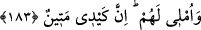
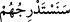

Rengime ve kokuma bakıp ta kendini aldatma
Çünkü benim gülüşümde ağlamak vardır
Hâfız der ki:
Feleğin sana verdiği mühlete aldanıp yanlış yola girme
Bu yaşlı feleğin aldatma huyunu terkettiğini sana kim söyledi?
183. Onlara mühlet veririm; (ama) benim cezam çetindir.
“Onlara mühlet veririm;” Yani onları içinde bulundukları hal üzere bırakarak süre
tanırım. Cezalandırmakda acele etmem.
Ebüssuûd Efendi der ki: “
” (Onlara mühlet veririm) ifâdesi, “
”
(yavaş yavaş helâke yaklaştıracağız) ifâdesine atfedilmiştir, ona bağlıdır. Şu kadar var
ki onun gibi gelecek zaman anlamına dahil değildir. Çünkü mühlet verme ve süre
tanıma, yavaş yavaş helâke yaklaştırma (istidrâc) gibi kendi kendine azar azar meydana
gelip tedrîcen olan şeylerden değildir. Aksine o, bir defada olan bir fiildir. Tedricî
olarak mühlet vermenin kendisi değil, tesirleri ve hükümleri meydana gelir.
“Şüphesiz benim tuzağım çetindir.” Yani benim yakalayıp cezalandırmam pek
şiddetlidir.
Cezanın “tuzak” diye isimlendirilmesi, görünüşünün ihsan, içyüzünün (bâtınının) ise
terk etmek ve yardımsız bırakmaktan ibâret olduğundandır.
Şeyhülislâm Sa‘di Çelebi, azabın onlara farkında olmadıkları yerden gelmesi
sebebiyle ona “tuzak” denilmiş olmasının en uygunu olacağını, çünkü tuzağın gizlice
yakalamak demek olduğunu söylemiştir.
Haddâdî ise tuzağı, bir şeye hissetmediği bir yönden zarar vermek olarak târif
etmiştir.
Hikem-i Ataiyye’de şöyle denilmektedir: Devamlı kötülük işlediğin halde Allah
Teâlâ’nın sürekli sana iyilikte bulunmasının bir istidrac olmasından kork. Çünkü Allah
Teâlâ: “Hiç bilmeyecekleri yerden yavaş yavaş helâke yaklaştıracağız.”
buyurmaktadır.
Sehl (r.a), bu ayetin manâsı hakkında şöyle demiştir: “Onlara bol nimet verir ve bu
nimetlere şükretmelerini unuttururuz. Nimete dalıp, nimeti verenden gafil oldukları
sırada yakalanıp azaba çarptırılırlar.”
Ebü’l-Abbas b. Atâ ise bu ayetin mânâsı hakkında şöyle demiştir: “Her hata
edişlerinde Allah onlara yeni bir nimet verir ve bu hataya istiğfar etmeyi unutturur.”
Şeyh Ebü’l-Kasım Kuşeyrî (r.h) der ki: “İstidrâc, fitne korkusu olmadan nimetin ardı